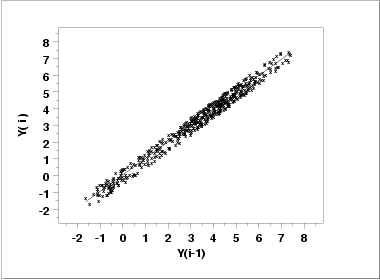
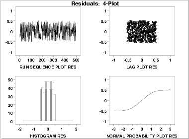
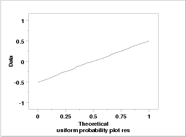

|
1.
Exploratory Data Analysis
1.4. EDA Case Studies 1.4.2. Case Studies 1.4.2.3. Random Walk
|
|||
| Plot Predicted with Original Data |
The first step in
verifying the model
is to plot the predicted values from the fit with the original data.
 This plot indicates a reasonably good fit. |
||
| Test Underlying Assumptions on the Residuals | In addition to the plot of the predicted values, the residual standard deviation from the fit also indicates a significant improvement for the model. The next step is to validate the underlying assumptions for the error component, or residuals, from this model. | ||
| 4-Plot of Residuals |  | ||
| Interpretation |
The assumptions are addressed by the graphics shown above:
|
||
| Uniform Probability Plot of Residuals |

Since the uniform probability plot is nearly linear, this verifies that a uniform distribution is a good model for the error component. |
||
| Conclusions |
Since the residuals from our model satisfy the underlying
assumptions, we conlude that
|
||
| Using Scientific and Engineering Knowledge | In this case, the above model makes sense based on our definition of the random walk. That is, a random walk is the cumulative sum of uniformly distributed data points. It makes sense that modeling the current point as the previous point plus a uniformly distributed error term is about as good as we can do. Although this case is a bit artificial in that we knew how the data were constructed, it is common and desirable to use scientific and engineering knowledge of the process that generated the data in formulating and testing models for the data. Quite often, several competing models will produce nearly equivalent mathematical results. In this case, selecting the model that best approximates the scientific understanding of the process is a reasonable choice. | ||
| Time Series Model | This model is an example of a time series model. More extensive discussion of time series is given in the Process Monitoring chapter. | ||